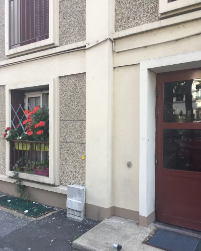
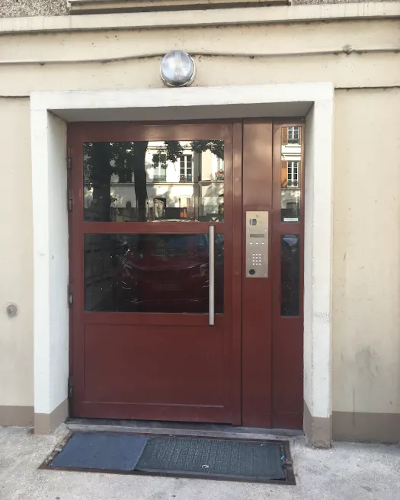
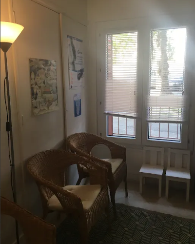
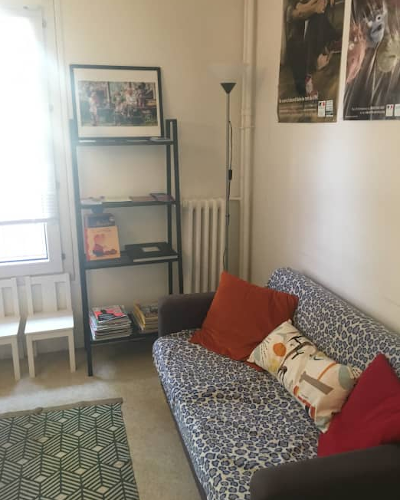

Anastasia Quiquempois
Sage-Femme
Accueil
Présentation
Honoraires
Articles
Votre suivi personnalisé
avant et après accouchement
Prenez rendez-vous !
Accueil
Présentation
Honoraires
Articles
Parcours
Professionnel
2013 : Obtention du diplôme de Sage Femme, Université Pierre et Marie Curie (Universités Sorbonne, Paris 6)
De 2013 à 2017 : Praticienne hospitalière à la maternité Sainte Félicité
2017 :
Praticienne libérale en cabinet à Pantin
Formation en rééducation périnéale (Médic Formation)
2018 :
Formation sur l'accompagnement de l'allaitement maternet et sur les rythmes du nouveau-né (CO NAITRE)
Formation sur les examens cliniques et le suivi du nouveau-né (Médic Formation)
Formation concernant le suivi gynécologique et la contraception (Médic Formation)
2019 :
Formation aux massages bien-être de la femme et du nouveau-né (YOGSANSARA)
Formation aux portages de début de vie (L'Ecole à Porter)
Visite
Guidée
   